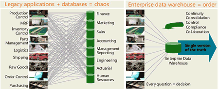
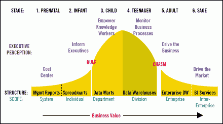
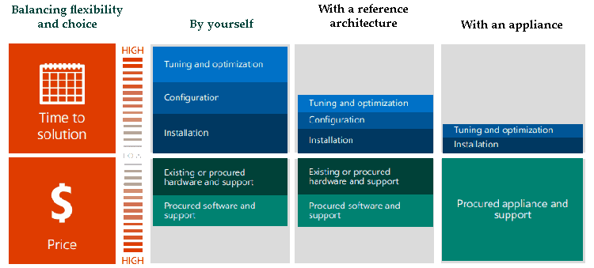
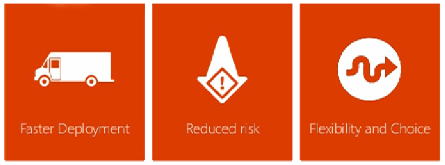

One repository. A single version of the truth.
A data warehouse stores data from multiple sources for historical and trend analysis reporting, acting as a central repository for many subject areas.
Built for analysis, not transactions
A data warehouse is where you store data from multiple data sources to be used for historical and trend analysis reporting. It acts as a central repository for many subject areas and contains the "single version of truth".
It is not to be used for OLTP (transaction processing) applications.

Click to zoom- A copy of a source database with the name prefixed with "DW".
- A copy of multiple tables (for example, customer) from various source systems unioned together in a view.
- A dumping ground for tables from various sources with little design put into it.
Reasons to leverage a data warehouse
Reduce stress on production systems
Optimized for read access and sequential disk scans
Integrate many sources of data
Keep historical records, with no hard-copy reports
Restructure and rename tables and fields; model data
Protect against source system upgrades
Master Data Management, including hierarchies
Users create reports without IT involvement
Improve data quality and plug holes in source systems
Build BI solutions on top, such as SSAS cubes
Where is your organization on the curve?
Business value grows as data moves from management reports to enterprise BI services.
- 1 · Prenatal
Management reports
System scope. Seen as a cost center.
- 2 · Infant
Spreadmarts
Individual scope. Informs executives.
- 3 · Child
Data marts
Department scope. Empowers knowledge workers.
- 4 · Teenager
Data warehouses
Division scope. Monitors business processes.
- 5 · Adult
Enterprise DW
Enterprise scope. Drives the business.
- 6 · Sage
BI services
Inter-enterprise scope. Drives the market.

See the curveHardware that's ready on day one
Fast Track Data Warehouse
A reference configuration optimized for data warehousing, so you don't commit resources to configuring and building server hardware. Tested for data warehousing, it eliminates guesswork and saves months of configuration, setup, testing and tuning: you install the OS and SQL Server.
Appliances
SQL Server appliances (SMP and MPP) let you deploy data warehouse, business intelligence and database consolidation solutions in a very short time, with hardware, software and services pre-configured and pre-optimized for ready-to-run, high-performance, energy-efficient operation.

Click to zoom
Click to zoomTurn scattered data into one version of the truth.
Talk to us about designing a warehouse your users can report from on their own.